O Glamuroso Pão de Açúcar
O Pão de Açúcar é um dos cartões-postais mais famosos do Brasil e um dos pontos turísticos mais visitados do mundo. Localizado no bairro da Urca, na cidade do Rio de Janeiro, ele se destaca por sua formação rochosa imponente que se eleva a aproximadamente 396 metros acima do nível do mar.
O nome “Pão de Açúcar” surgiu no período colonial, pois a forma do morro lembra os blocos de açúcar moldados em forma cônica que eram exportados para a Europa nos séculos XVI e XVII.
Uma das experiências mais marcantes é o passeio de bondinho, inaugurado em 1912 — um dos primeiros teleféricos do mundo.
Etapas do passeio:
- Da Praia Vermelha até o Morro da Urca
- Do Morro da Urca até o topo do Pão de Açúcar
Saiba mais sobre o Bondinho do Pão de Açúcar
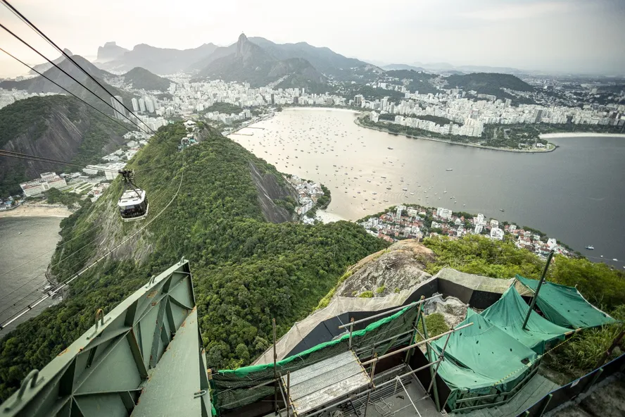
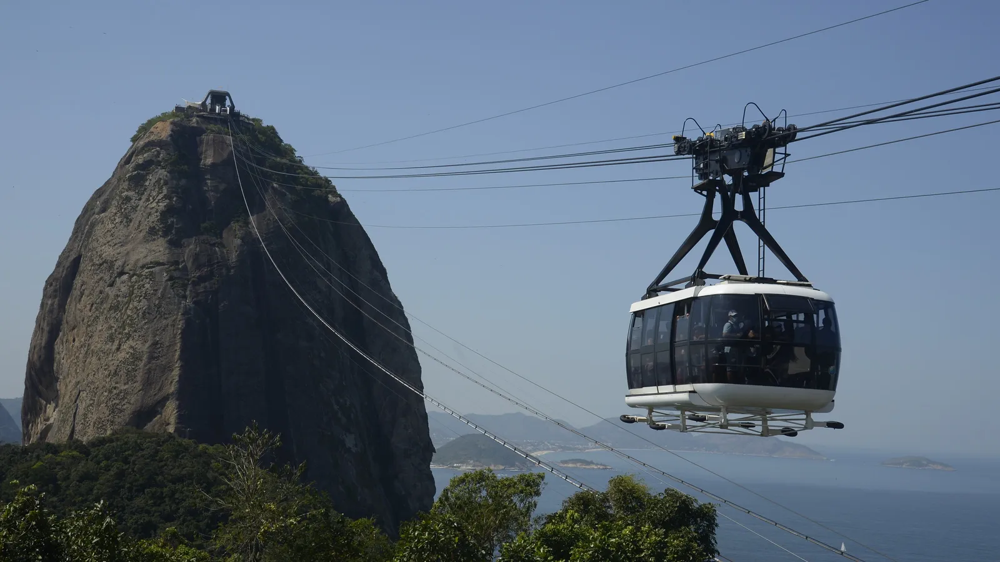
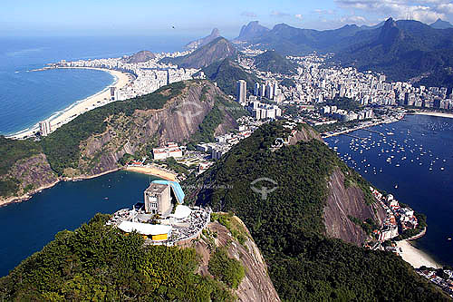
O Monumento do Cristo Redentor
O Cristo Redentor é um dos monumentos mais famosos do mundo e o maior símbolo do Rio de Janeiro. Localizado no topo do Morro do Corcovado, a cerca de 710 metros acima do nível do mar, ele oferece uma das vistas mais impressionantes da cidade.
A estátua foi inaugurada em 1931 e levou aproximadamente nove anos para ser construída. Em 2007, o Cristo Redentor foi eleito uma das Novas Sete Maravilhas do Mundo Moderno.
Curiosidades:
- Altura da estátua: 30 metros
- Altura do pedestal: 8 metros
- Envergadura dos braços: 28 metros
- Peso aproximado: 1.145 toneladas
Site oficial do Cristo Redentor
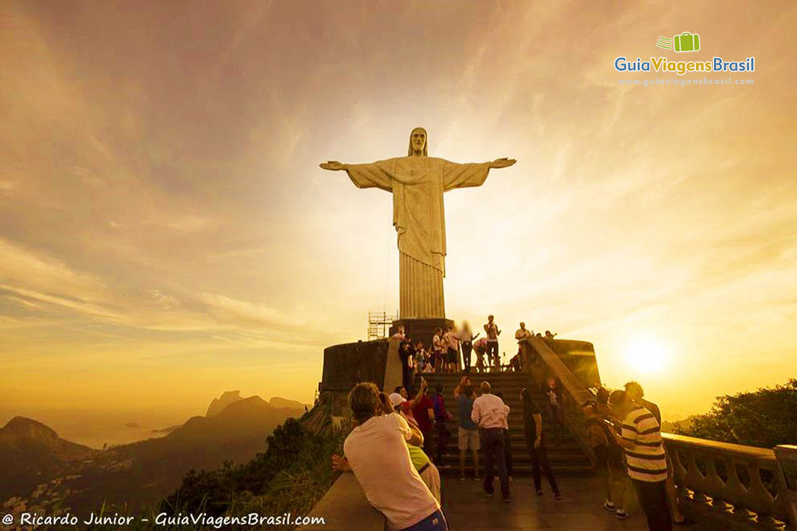
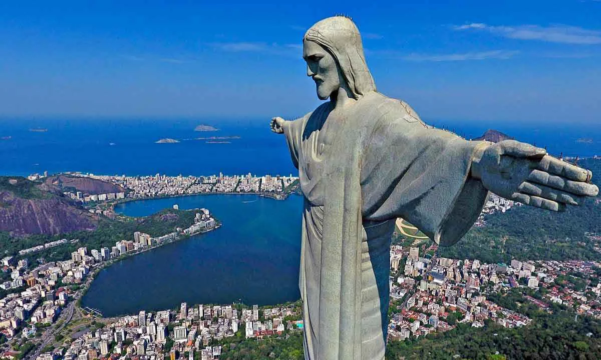
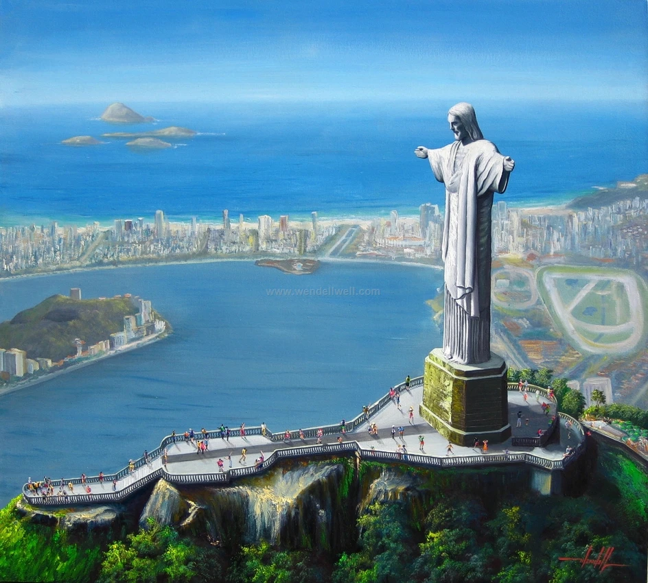
O Antigo Forte de Copacabana
O Forte de Copacabana é um dos pontos históricos e turísticos mais importantes do Rio de Janeiro. Localizado no extremo sul da Praia de Copacabana, ele foi inaugurado em 1914 com a função de proteger a Baía de Guanabara contra possíveis invasões marítimas.
O forte ganhou destaque nacional durante o movimento conhecido como Revolta dos 18 do Forte, em 1922.
No local, você pode conhecer:
- Armas e canhões originais
- Exposições sobre a história militar brasileira
- Espaços interativos e educativos
Mais informações sobre o Forte de Copacabana

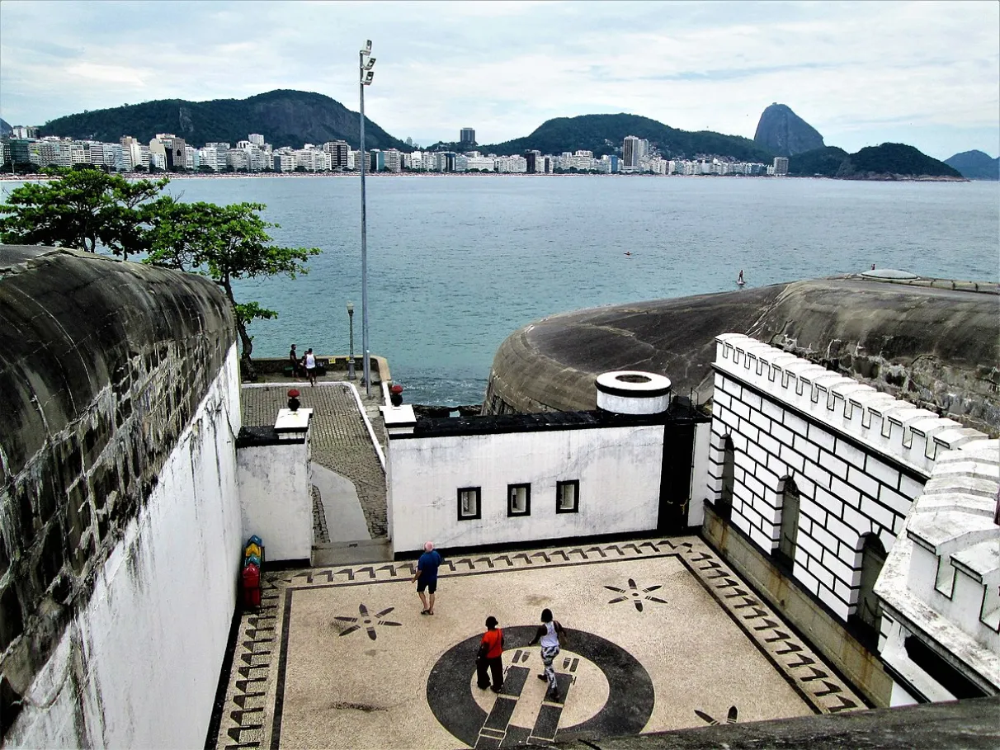
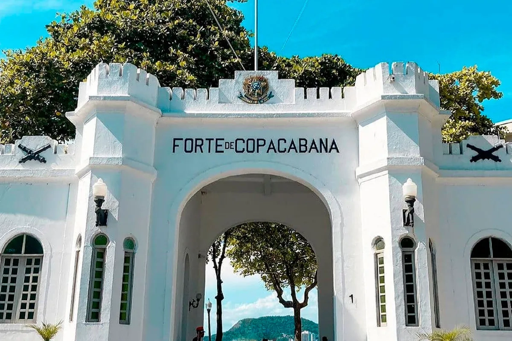
A Bela Praia de Copacabana
A Praia de Copacabana é uma das praias mais famosas do mundo e um dos maiores símbolos do Rio de Janeiro. Localizada na zona sul da cidade, ela possui aproximadamente 4 km de extensão, com uma ampla faixa de areia branca e um mar que atrai turistas durante todo o ano.
Copacabana é conhecida pelo seu famoso calçadão com desenho em ondas, feito com pedras portuguesas pretas e brancas.
Grandes eventos em Copacabana:
- Réveillon de Copacabana
- Shows internacionais
- Eventos esportivos e culturais
Veja mais atrações do Rio
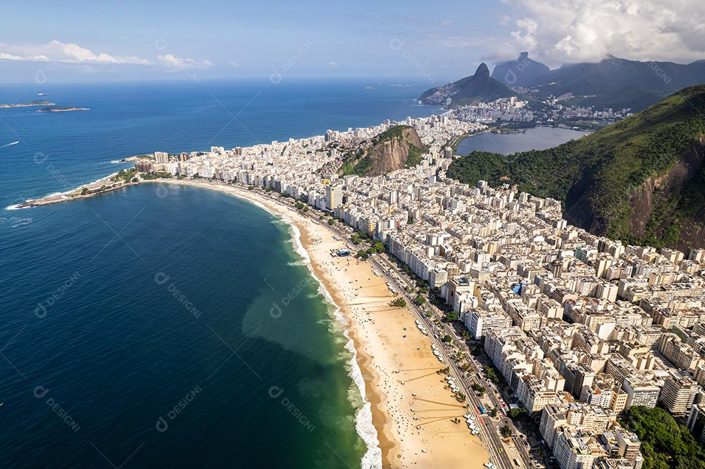
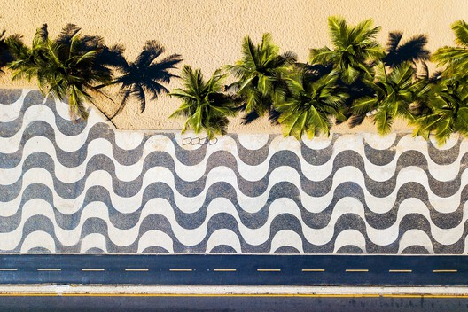
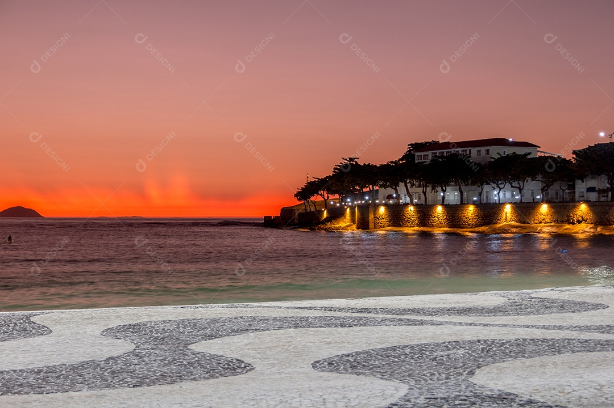
A Calorosa Praia de Ipanema
A Praia de Ipanema é uma das praias mais famosas e charmosas do Rio de Janeiro, localizada na zona sul da cidade, ao lado de Copacabana. Com areia clara e mar azul-esverdeado, ela é conhecida por seu visual incrível e atmosfera vibrante.
Ipanema oferece uma vista espetacular do Morro Dois Irmãos, que se torna ainda mais especial durante o pôr do sol, principalmente visto do Arpoador.
Em Ipanema você encontra:
- Áreas divididas por “postos”
- Esportes como futevôlei e altinha
- Quiosques modernos e restaurantes
- Ciclovia e calçadão para caminhadas
Descubra mais sobre Ipanema
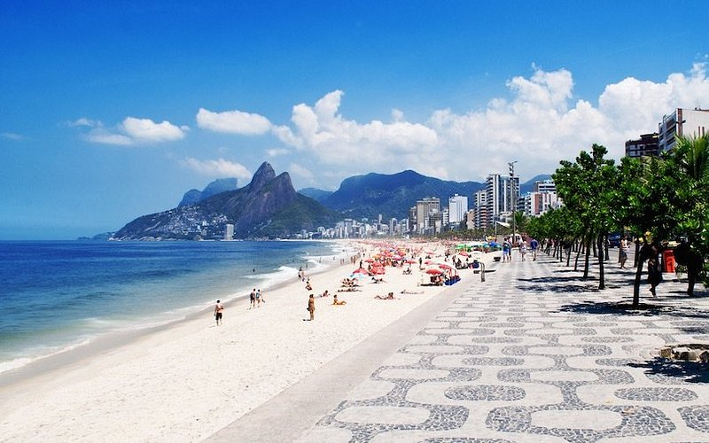
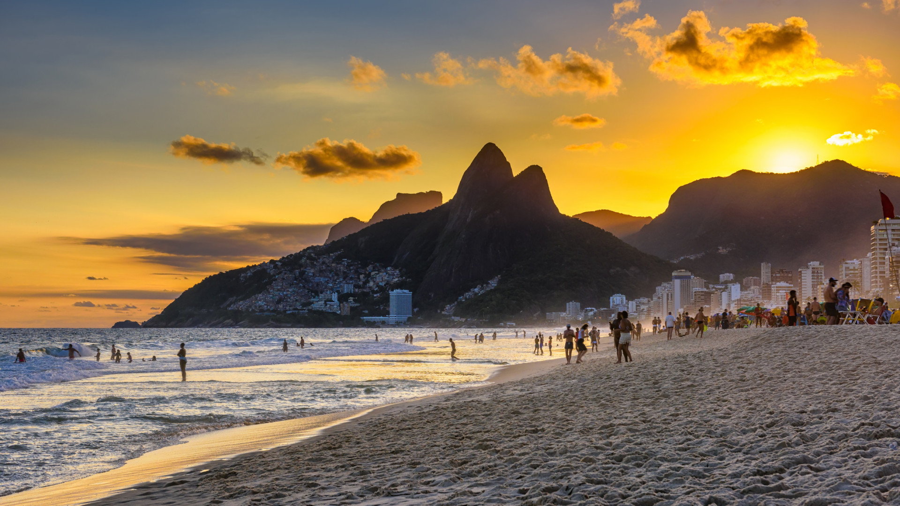
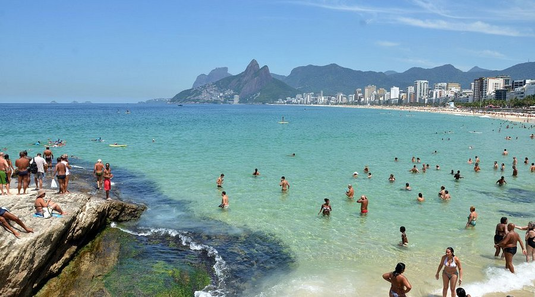